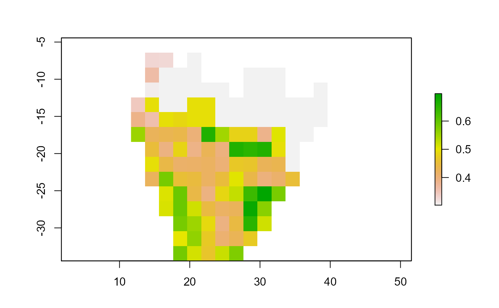

dynamic_proj.RdProjects fitted species distribution and abundance models onto projection covariates for each date given.
dynamic_proj(
dates,
projection.method,
local.directory,
drive.folder,
user.email,
sdm.mod,
sdm.thresh = 0.5,
sdm.weight = 1,
sam.mod,
sam.weight = 1,
save.directory,
save.drive.folder,
cov.file.type,
prj = "+proj=longlat +datum=WGS84",
proj.prj,
spatial.mask
)a character string, vector of dates in format "YYYY-MM-DD".
a character string or vector, the method or methods to project
distribution and abundance onto projection covariates. Options include proportional, binary,
abundance and stacked. See details for more information.
optional; a character string, the path to a local directory to read projection covariate data frames from.
optional; a character string, the Google Drive folder to read projection covariate data frames from. Folder must be uniquely named within Google Drive. Do not provide path.
optional; a character string, user email for initialising Google Drive. Required if drive.folder or save.drive.folder used.
optional; a model object or list of model objects fitted to species distribution data.
optional; a numeric value, the threshold to convert projected distribution
suitability into binary presence-absence. Default 0.5. Required if projection.method is
"binary" or "stacked".
optional; a numeric string, weights given to each sdm.mod model projection,
given in the same order as the sdm.mod list. Default is equal weighting to all models.
optional; a model object or list of model objects fitted to species abundance data.
optional; a numeric string, weights given to each sdm.mod model projection,
given in the same order as the sam.mod list. Default is equal weighting to all models.
optional; a character string, path to local directory to save projection rasters to.
optional; a character string, Google Drive folder to save projection rasters to. Folder must be uniquely named within Google Drive. Do not provide path.
a character string, the type of file that contains projection covariates. One
of: "tif" (raster stack) or csv(data frame).
a character string, the coordinate reference system of input projection covariates. Default is "+proj=longlat +datum=WGS84".
a character string, the coordinate reference system desired for output projection rasters. Default is assumed to be the same as prj.
an object of class Raster, sf or Spatial, represeting a mask in which NA
cells in the mask layer are removed from the projection covariates.
Exports projection rasters for each projection date to user-specified Google Drive folder or local directory.
Function projects a model object or list of model objects onto projection covariate data frames for each projection date given.
Data frames: if cov.file.type = csv, then projection covariates must be saved ".csv" files
in the drive.folder or local.directory given. Here, they must be unique in containing the
relevant projection date in “YYYY-MM-DD” format. For instance, two or more “.csv” files saved
within the Google Drive folder or local directory that contain the projection date will result
in function error. Additionally, column names of projection covariate data frames must match the
explanatory variable names that fitted models are trained on.
Raster stacks: if cov.file.type = tif, then projection covariates must be saved ".tif"
files, similarly named and formatted as above. Raster layer names must match the explanatory
variable names that fitted models are trained on.
Note: It is important to state the coordinate reference system projection of covariates using
argument prj.
When multiple models are provided in sdm.mod or sam.mod, the function projects each model
onto the projection covariates and takes the average value across all model projections. If
sdm.weight or sam.weight is specified, then the weighted average of model projections is
returned. For example, this could be used to down weigh projections by poorly performing models
in an ensemble.
proportional: Projects sdm.mod model objects onto projection covariates for each date,
exporting rasters for projected distribution suitability, a continuous measure between 0 (least
suitable) and 1 (most suitable).
binary: Projects sdm.mod onto projection covariates for each date, exporting rasters for
projected binary presence (1) or absence (0), derived from distribution suitability using
user-specified threshold (sdm.thresh) or default threshold of 0.5.
abundance: Projects sam.mod onto projections covariates for each date, exporting rasters for
projected abundance in the units that sam.mod were fitted onto.
stacked: Follows the binary projection method and then projects abundance onto only binary presence (1) cells using the abundance projection method.
Projections are output as rasters. These can be reprojected to a different coordinate reference
system using argument proj.prj.
One or both of save.drive.folder and save.directory are required to specify where projection
rasters are to be saved.
If drive.folder or save.drive.folder given, please ensure the folder name is unique within your
Google Drive. Do not provide the path if the folder is nested within others.
If one of drive.folder or save.drive.folder are used then user.email is required to access the
appropriate Google Drive user account. This requires users to have installed R package
googledrive and initialised Google Drive with valid log-in credentials. Please follow
instructions on https://googledrive.tidyverse.org/.
data("sample_explan_data")
variablenames<-c("eight_sum_prec","year_sum_prec","grass_crop_percentage")
model <- brt_fit(sample_explan_data,
response.col = "presence.absence",
varnames = variablenames,
interaction.depth=2,
distribution = "bernoulli")
#> block.col not specified. Model will be fit on all occ.data.
#> weights.col not specified. All records equally weighted.
data(sample_cov_data)
data(sample_extent_data)
write.csv(sample_cov_data,file=paste0(tempdir(),"/2018-04-01_covariates.csv"))
dynamic_proj(dates = "2018-04-01",
projection.method = c("proportional","binary"),
local.directory = tempdir(),
cov.file.type = "csv",
sdm.mod = model,
spatial.mask = sample_extent_data,
save.directory = tempdir())
#> No sdm.thresh. Default 0.5
#> No sdm.weight specified. Default equal weighting.
#> Using 5000 trees...
sp::plot(raster::raster(paste0(tempdir(),"/2018-04-01_proportional.tif")))
